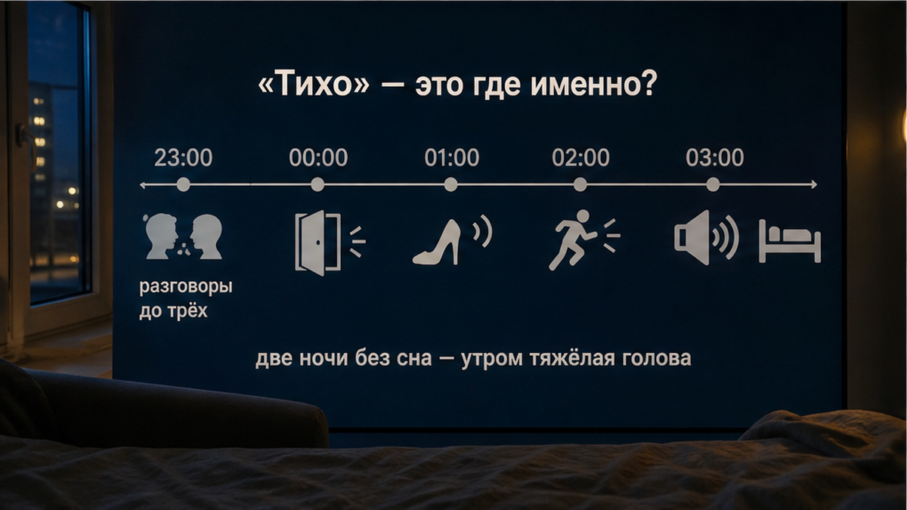
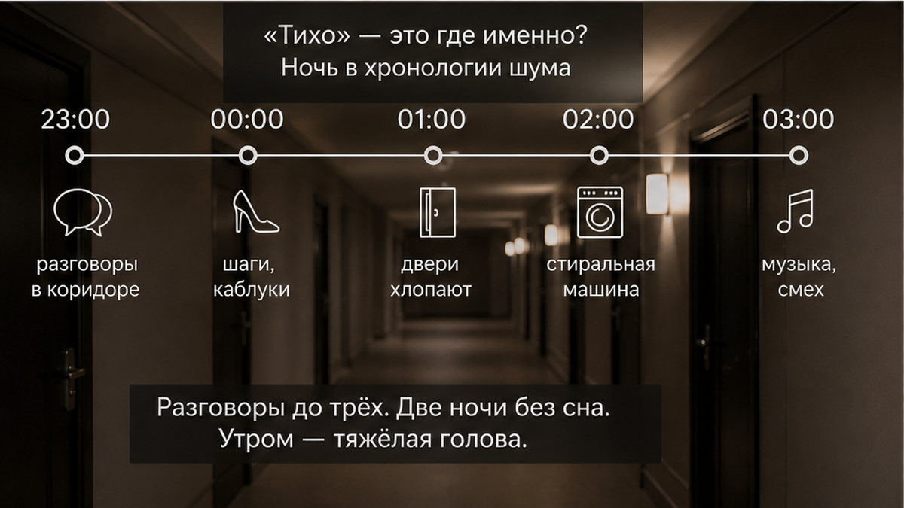
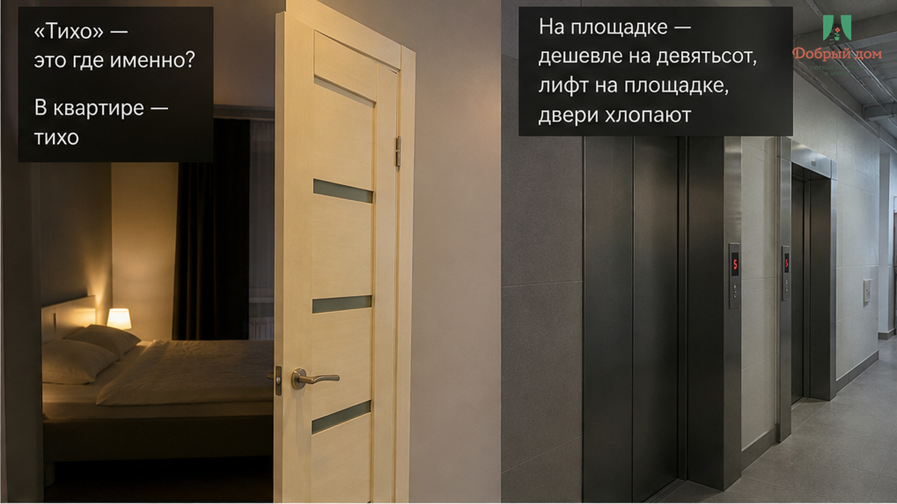
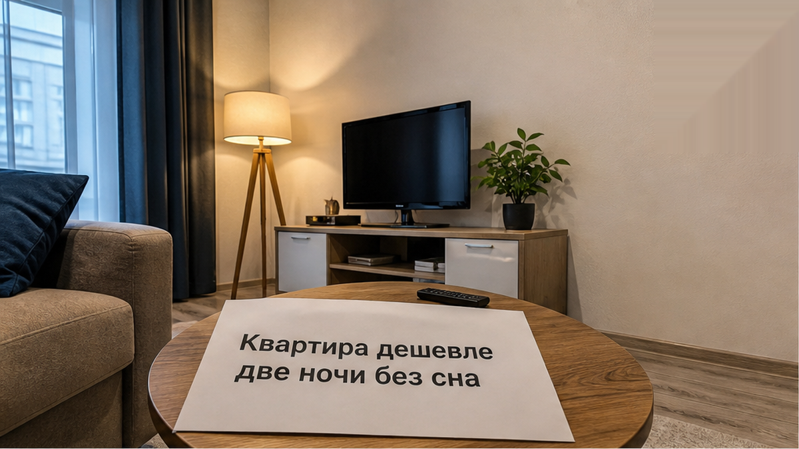
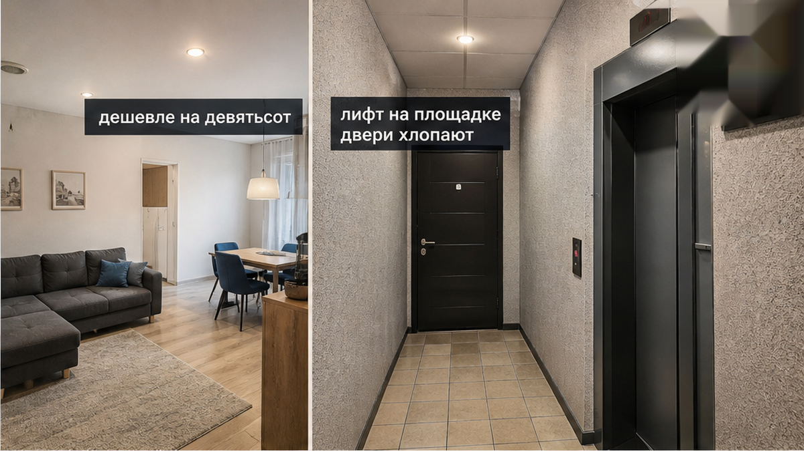
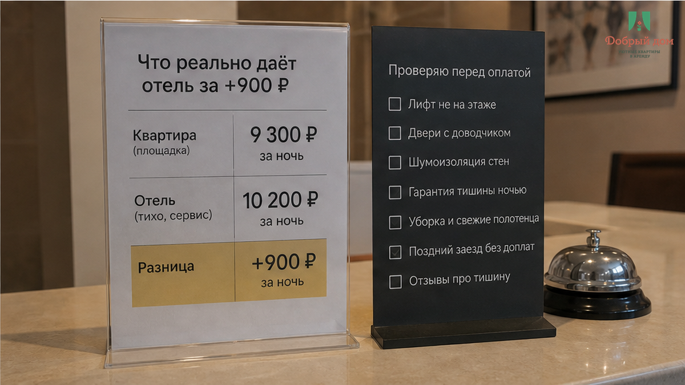
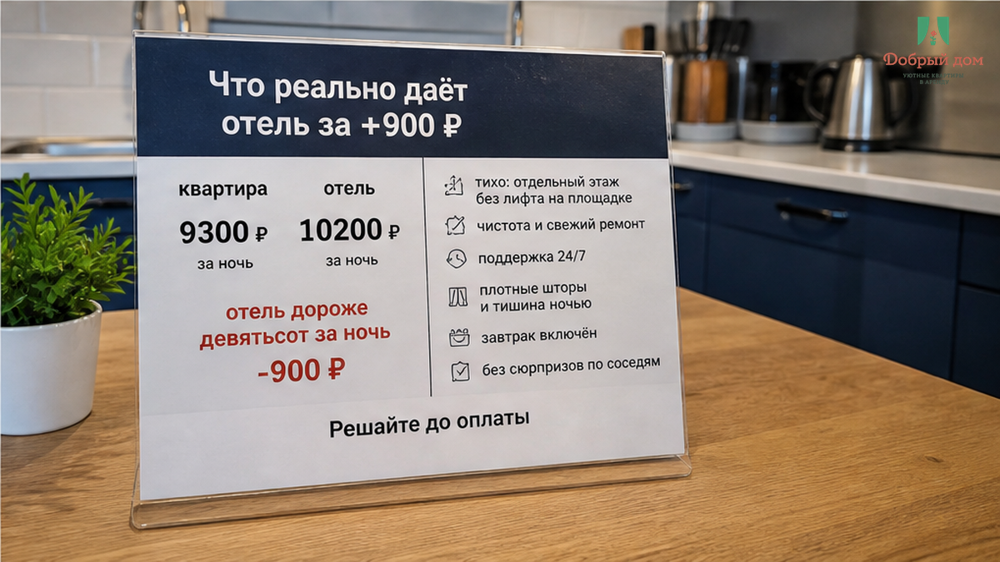

«Тихо, как дома», — написал хозяин. Квартира была дешевле отеля на 900 ₽ за ночь, и для пары на три ночи это выглядело разумно: не переплачивать же почти 2 700 ₽ за ту же Тюмень, ту же поездку, ту же кровать на ночь. Но в первую ночь оказалось, что слышно не квартиру. Слышно коридор: хлопают двери, приезжает лифт, на площадке кто-то задержался поговорить. Так — до трёх утра. Не музыка за стеной, не пьяная вечеринка, не форс-мажор. Обычная жизнь подъезда, к которой человек, живущий в доме, давно привык, а гость приехал на пару дней и не обязан привыкать.
Во вторую ночь всё повторилось. Две ночи без сна, утром — дела и голова, которая не включается нормально. На последнюю ночь пара уже взяла отель примерно за 4 500 ₽. Экономия в 900 ₽ за ночь закончилась лишними расходами и двумя ночами, которые не вернуть. Самое обидное: никто специально никого не обманывал. Просто фраза «тихо, как дома» для хозяина и для гостя означает совершенно разное.
Я хост посуточной в Тюмени. Это «Добрый дом». Telegram · MAX.
Не «дешевле на 900». Не «тихо, как дома». А коридор и лифт до трёх.



Когда в объявлении пишут «тихая квартира», хозяин часто говорит о том, что контролирует сам: окна не гремят, холодильник не воет, вытяжка не гудит, за стеной нет ремонта. Внутри квартиры действительно может быть спокойно. Но гость читает это иначе: он покупает сон. И ему неважно, откуда придёт звук — из соседней квартиры, с улицы или с площадки у лифта.
Вот здесь и возникает конфликт. Хост думает: «Я же не соврал, в квартире тихо». Гость думает: «Я выбрал тихий вариант, а до трёх утра слушал подъезд». Формально оба могут быть правы. По факту человек не выспался, а значит, обещание сработало плохо.
Особенно неприятно, когда ответ на ночную жалобу приходит утром: «Ну это же многоквартирный дом». Да, это многоквартирный дом. И хост не может в три часа ночи выключить лифт, поставить соседей на паузу или заставить дверь закрываться бесшумно. Но сказать об этом надо до оплаты. Не после того, как вы уже лежите без сна и понимаете: решить проблему прямо сейчас некому.
Мы уже разбирали, как слово «тихий» легко создаёт неверное ожидание: когда в объявлении обещали тихий дом, а ночью появились соседи с музыкой, и когда «тихий центр» не спасает от звуков за окном. Источник шума каждый раз разный. Поэтому проверять нужно не красивое слово, а конкретную ночь: окна, двор, дорогу, площадку, лифт, соседей.

Вы открываете карточку: рейтинг высокий, отзывы хорошие. «Чисто». «Удобное заселение». «Хозяин на связи». «Всё понравилось». Это полезные отзывы, но они не отвечают на главный вопрос, если утром вам на встречу, в дорогу или просто нужен сон: что происходит около квартиры ночью?
Про коридор, лифт и разговоры на площадке пишут редко. Не потому что такого не бывает. Просто один гость спал в берушах, другой приехал в выходной, третий был настолько уставшим, что ничего не услышал, четвёртый не хочет писать развёрнутый отзыв. А пятый, которому мешало, уже уехал злой и поставил три звезды без объяснений.
Высокий рейтинг не равен гарантии тишины. Я отдельно писал, почему рейтинг 4,8 может состоять из отзывов «всё супер» без единого слова о ночном шуме. Рейтинг обычно говорит о чистоте, заселении, общении и том, совпали ли ожидания гостя с поездкой. Но если вы едете спать, вам надо искать не оценку вообще, а слова: «ночью», «подъезд», «лифт», «площадка», «двери», «шумно», «тихо».
И спросить хозяина прямо. Не «у вас тихо?», потому что на этот вопрос почти всегда будет честное, но слишком общее «да». Спросите иначе: «Квартира близко к лифту? Слышно ли площадку? Были ли жалобы на шум ночью?» На такой вопрос сложнее ответить рекламной фразой. Он требует конкретики.


Не надо делать из отеля храм тишины. В гостиницах тоже ездят тележки, ходят люди по коридору, закрываются двери, бывает шумный номер рядом или сверху. Отель не покупает вам абсолютную тишину. Квартира, кстати, тоже не обязательно шумная: бывает дом, где ночью действительно слышно только холодильник.
Но за разницу в 900 ₽ вы иногда покупаете не «лучший сон», а другой сценарий, если сон уже сорвался. В отеле может быть круглосуточная стойка. Может быть сотрудник, к которому можно подойти в три утра. Иногда может быть другой номер. Не всегда: всё зависит от конкретного отеля, загрузки и наличия ночного персонала. Это тоже надо уточнять заранее.
В посуточной квартире устройство другое. Есть хост, есть телефон или мессенджер, есть правила внутри жилья. Но есть и подъезд, которым хост не управляет. Он не хозяин коридора. И если вы снимаете квартиру рядом с лифтом, нужно не требовать невозможного после заселения, а понять риск до перевода.
Вот что стоит сравнивать, когда разница кажется небольшой: не только кровать, площадь и фото ванной. Смотрите, кто отвечает ночью, есть ли у вас куда обратиться, можно ли сменить номер или объект, что будет при проблеме. Девятьсот рублей в таком сравнении — не доплата «за вывеску». Это возможная цена запасного варианта, когда первая ночь пошла не так.
Вопрос, который стоит задать себе перед оплатой: что в свежих отзывах сказано про шум, коридор и лифт — и что конкретно даёт отель за +900 ₽? Не вообще «отель лучше или квартира». А именно ваш отель и именно эта квартира.
А вы при такой разнице сначала читаете отзывы про коридор или смотрите только на цену? Напишите мне в Telegram — отвечаю лично, без заученных фраз.

Сначала проверка. Потом перевод.
Не потому что любая квартира опасна, а любой хозяин пытается что-то скрыть. Нет. Потому что ночь — вещь дорогая. Её нельзя вернуть скидкой утром, вежливым сообщением или объяснением про многоквартирный дом. Если у вас важное утро, дорога, ребёнок, работа или просто желание нормально отдохнуть, вопрос шума должен быть частью выбора, а не мелким пунктом после цены.
Нет. Так не выбираем. По одной цифре в объявлении нельзя понять, во что обойдётся поездка. Дешевле — это когда вы заранее знаете условия и принимаете их. А не когда после двух бессонных ночей бронируете отель в последний момент.
После вывода — короткий список, который реально можно отправить хозяину перед оплатой:
Пять вопросов занимают несколько минут. Они не гарантируют идеальную ночь. Но убирают главное: вы не покупаете «тихо» вслепую, вкладывая в это слово своё значение.
Если нужна квартира в Тюмени, где можно заранее спросить про условия без рекламных обещаний — пишите: